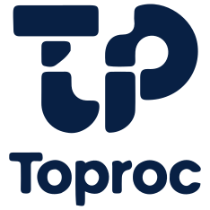

ToProccess API - v0.0.1

ToProccess core: tx-driven secure dispatch backend.
Español: ver README.es.md
English
Toproc is a developer-first backend architecture built around the ToProccess core. It gives you a solid baseline (security model + DX tooling) without forcing you into a full framework.
Highlights
- Cookie sessions with Postgres store + CSRF protection (designed for web apps).
- Transaction/RPC-style execution via
POST /toProccess(tx→ permissions → BO method). - DB-backed permission model (
securityschema) with CLIs for init + BO sync + permissions. - Operational basics included:
/health,/ready, request IDs, consistent JSON errors. - Optional frontend hosting modes (
none/pages/spa) with safe ordering. - TypeScript-first runtime (ESM) with
strict: trueand a DI-friendly seam (AppContext).
Who this is for
- Internal apps (B2B/admin) that want cookie sessions + CSRF.
- Teams that want a maintainable baseline and clear extension points.
TypeScript-first + DI (what to expect)
- TypeScript-first: source-of-truth is
src/**/*.tsand strict typechecking is part of the quality gate. - DI-friendly (no heavy container): runtime services are available via globals, and also collected into an
AppContextcreated bycreateAppContext().
Start here:
- Types + DI: docs/en/14-types-and-di.md
Quickstart (10 minutes)
- Install:
npm install
- Configure environment:
Copy .env.example to .env and set your Postgres connection (DATABASE_URL or PG*).
- Initialize DB (required):
npm run db:init
Docs (EN):
- DB init CLI: docs/en/10-db-init-cli.md
- Run:
npm run dev
# or
npm start
Useful endpoints:
GET /healthGET /readyGET /csrfPOST /loginPOST /logoutPOST /toProccess
Core idea (BO + tx)
- Your business logic lives in BO modules under
BO/<ObjectName>/<ObjectName>BO.js. security.methodsmapstx→(object_name, method_name).security.permission_methodscontrols which profiles can execute which methods.
Scaffold a BO:
npm run bo -- new Order
Sync BO methods to DB (tx mapping):
npm run bo -- sync Order --txStart 100
Documentation (EN)
Start here:
- English index: docs/en/00-index.md
- Auth (EN): docs/en/13-authentication.md
- Frontend tutorial (EN): docs/en/11-frontend-clients-and-requests.md
Documentación (ES)
- Arquitectura: docs/ARCHITECTURE.md - Visión general del sistema
- Inicio Rápido: docs/GETTING_STARTED.md - Configuración inicial
- Crear BOs: docs/CREATING_BOS.md - Guía para nuevos Business Objects
Scripts
| Script | Description |
|---|---|
npm start |
Runs the API server |
npm test |
DB-safe tests (Node test runner) |
npm run dev |
Runs with nodemon |
npm run format |
Formats the repo (Prettier) |
npm run format:check |
Checks formatting (CI-friendly) |
npm run test:watch |
Runs tests in watch mode |
npm run test:coverage |
Generates coverage (c8) |
npm run verify |
Quality gate: typecheck + build + dist smoke + tests |
npm run db:init |
Initializes the security schema (idempotent) |
npm run bo -- <command> |
BO CLI (scaffold BOs, sync tx, manage permissions) |
npm run hashpw -- "<plainPassword>" [saltRounds] |
Generates bcrypt hashes |
Coverage note: c8 is configured to focus on runtime logic (src/**/*.ts) and excludes wiring/entrypoints (e.g. src/index.ts) and docs/scripts/BO assets.
BO/ (your domain)
The BO/ folder is intentionally empty by design.
- Add your BOs under
BO/<ObjectName>/<ObjectName>BO.js. - Scaffold quickly:
npm run bo -- new ObjectName.
License
MIT. See LICENSE.
Repo layout
src/: backend runtime (Express + BSS services)BO/: your domain BOs (kept empty by default)scripts/: CLI tools (BO CLI, db-init, export starterpack, etc.)docs/: ES/EN documentationpublic/: optional static assets forpagesmode (may be empty)